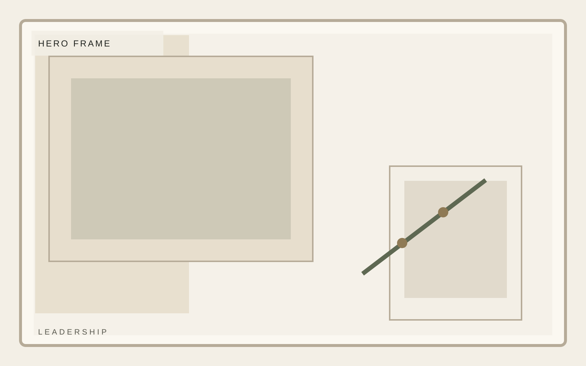
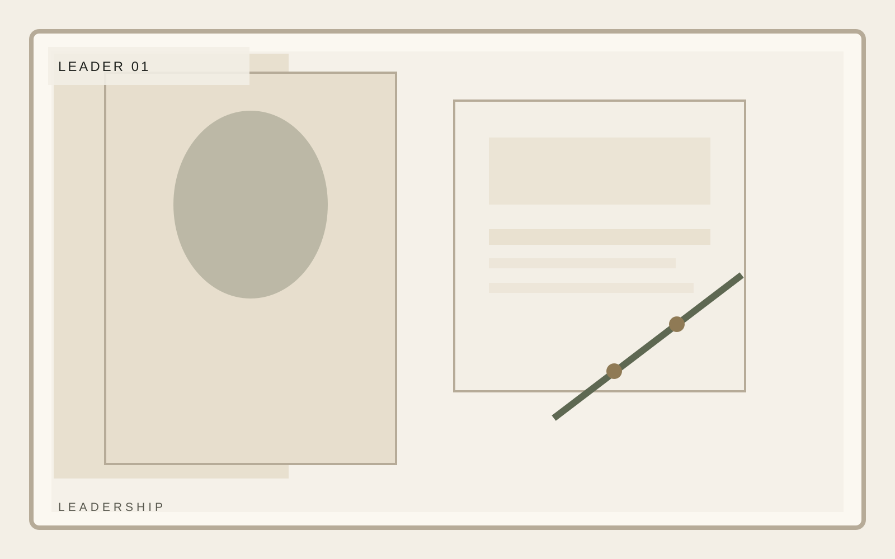

Institutional investment
Operators, investors, and advisors with a bias toward substance.
A composed private investment platform focused on durable middle-market businesses, disciplined underwriting, and practical value creation. The page works when the portraits align and the judgment still feels individual.
Focus
North American middle market
Hold posture
3 to 7 year horizon
Approach
Operator-led value creation

Institutional investment
Leaders
Leaders should be framed with consistency, but not sterility. The page needs alignment and still a sense of distinct operating judgment.
Avery Lane
Managing Partner
Jordan Pike
Operating Principal
Mina Sol
Portfolio Strategy

Institutional investment
Advisors
Advisors belong here only if they strengthen the institutional posture. The design should keep them secondary without making them feel decorative.
Avery Lane
Managing Partner
Jordan Pike
Operating Principal
Mina Sol
Portfolio Strategy
Institutional investment
Contact
Northline uses contact to establish credibility through structure, pacing, and real information density rather than decorative startup shortcuts. This leadership page stays consistent with the template system while giving this section its own visual weight.
Selective mandate
Operator context
Calm reporting